主题：Strong Scaling (Amdahl) vs Weak Scaling (Gustafson) + NVIDIA Nsight Systems / Nsight Compute 工具介绍
Lecture 12（2026-03-05）只有 11 张 slides，结构非常清晰：
① 行政（Slide 2–5）：GPU 资源、HW3、Q&A repo、Final Project 草案；
② Quiz（Slide 6）：单精度浮点占多少 bit；
③ 本讲核心（Slide 7–8）：Strong Scaling 与 Weak Scaling 两套衡量并行加速比的范式，对应 Amdahl & Gustafson；
④ 工具（Slide 9–10）：NVIDIA Nsight Systems（system-wide profiler）和 Nsight Compute（CUDA kernel profiler）；
⑤ 课程站点（Slide 11）：Challenges & Leaderboards。
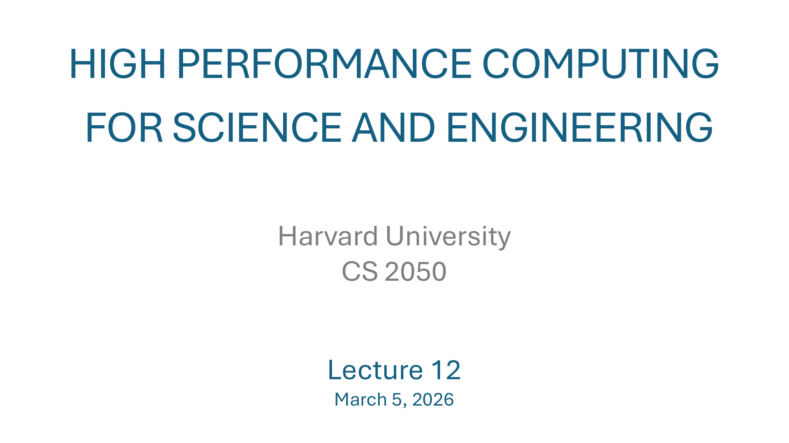
课程标题页。本讲是 CS 2050 第 12 讲，2026 年 3 月 5 日（春季学期，HW3 那一周）。题目里的 "Harvard University" 是模板字段，slides 在 Harvard 与本课程之间共用样式。Lecture 12 把上一讲（Lecture 11）VTune profiling 的"用工具找瓶颈"主线延续了下来——只是把 CPU 工具换成 GPU 工具（Nsight 系列），并先用 Amdahl/Gustafson 把"加速比到底能涨到哪"这个理论框架补上。
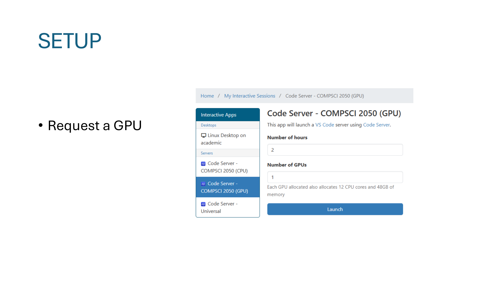
行政页：让大家进入 Open OnDemand → Interactive Apps → Code Server – COMPSCI 2050 (GPU)，Number of hours = 2，Number of GPUs = 1，点 Launch。
页面下方的小字写明了一个本讲会反复用到的事实：Each GPU allocated also allocates 12 CPU cores and 48 GB of memory——选 1 GPU = 自动配 12 核 + 48 GB。这是学校 cluster 的固定打包，不能拆。
注意：上一讲（Lecture 11 Slide 7）刚强调过不要在 GPU 交互会话里再 sbatch 二次作业，会因 SLURM_CPU_BIND 被转发而报 "CPU binding outside of job step allocation"。本讲虽然要在这个 Code Server GPU 会话里跑 Nsight，但只是直接 srun / 直接命令行，不再嵌套 sbatch，所以不冲突。
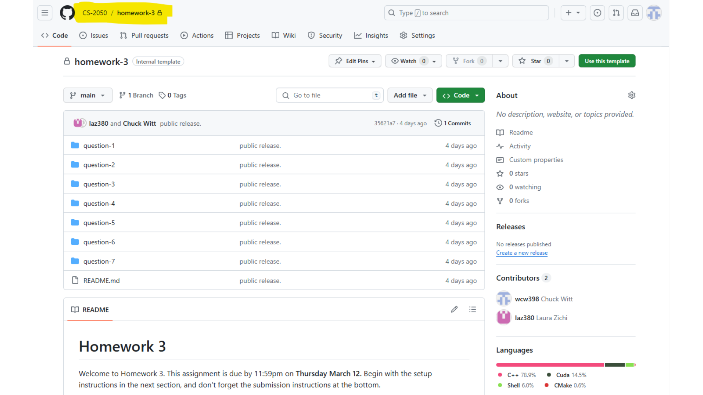
行政页。HW3 已经在 GitHub Classroom 上发布：cs-2050/homework-3 repo，里面有 question-1 ~ question-7 七个子目录，README 写明 "due by 11:59pm on Thursday March 12"——也就是本讲后第 7 天。
本讲并没有现场讲 HW3 题目，只是把仓库地址展示出来，并提示 "Begin with the setup instructions in the next section, and don't forget the submission instructions at the bottom"——意味着 HW3 跟前两次一样有专门的 setup（环境+脚本）和 submission（git push 到自己 fork 的 repo）流程。
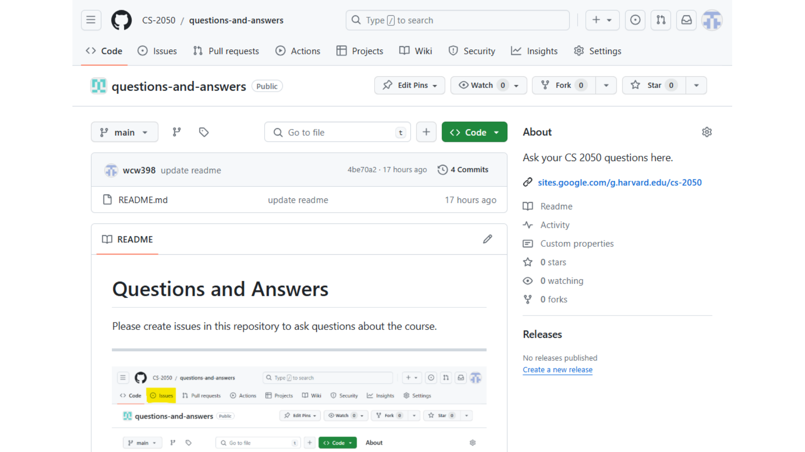
行政页。课程的"答疑频道"放在 GitHub 的 cs-2050/questions-and-answers repo——提问方式是开 issue，不是邮件、不是 Ed Discussion。这一点贯穿整个课程：上一讲 Slide 7 那个 Slurm CPU binding 问题就是这里的某个 issue 的回复。
对学生意味着：① 提问公开可搜，先搜旧 issue；② 教授/TA 回复也公开，所有人受益；③ 引用问题时直接给 issue URL 就行。
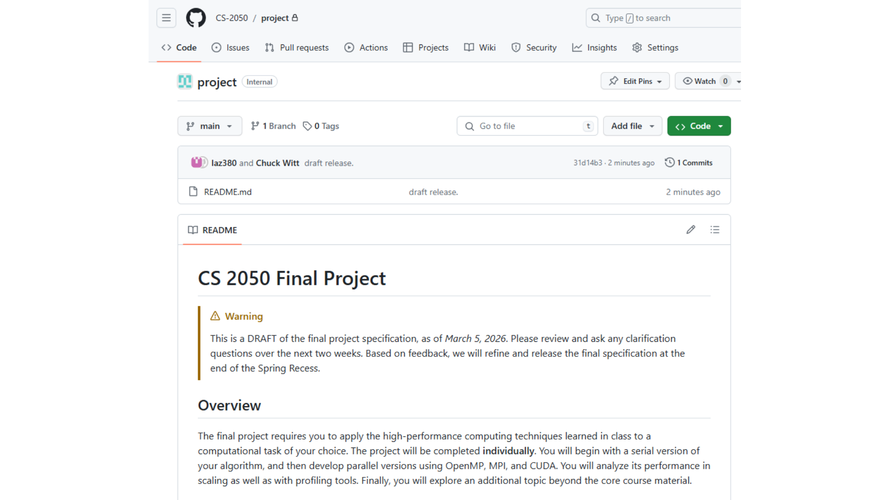
行政页。期末项目 spec 已经先放出 草稿（DRAFT），时间戳就是今天："as of March 5, 2026"。教授强调"在接下来两周里 review 并提问，基于反馈我们会在 Spring Recess 末再 finalize"。换句话说现在版本可能还会改，但骨架已定。
骨架（README "Overview" 段）：
所以本讲的 Strong/Weak Scaling 和 Nsight 工具，都是为期末项目准备的"必备语言"——不是讲完就忘的内容。
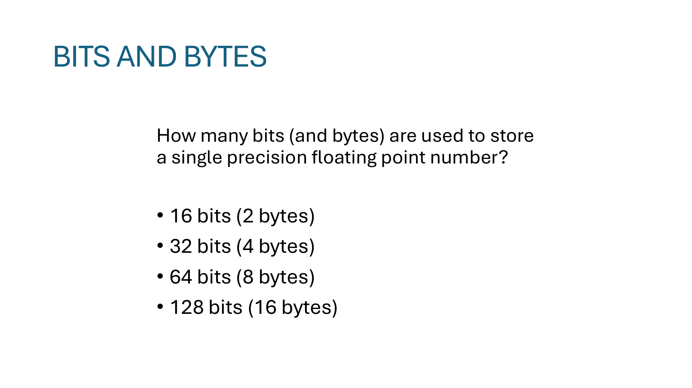
课堂小测，问单精度（single precision）浮点数占多少 bit / byte。正确答案：32 bits = 4 bytes。
"single precision" 指的是 IEEE 754 标准里的 binary32 格式，把 32 个 bit 切成三段：
| 段 | 位数 | 作用 |
|---|---|---|
| sign（符号位） | 1 | 0 = 正，1 = 负 |
| exponent（阶码） | 8 | decode 后 -126 ~ +127，用 bias 127 |
| mantissa / fraction（尾数） | 23 | 规约形式下隐含一个前导 1，等效 24 bit 精度 |
| 合计 | 32 | = 4 bytes |
对应 C/C++ 里就是 float（32 位），CUDA 里是 float 或 __half（half 是 16 位 binary16，不是单精度）。其它三个干扰项分别是：
double）。__float128），HPC 里偶尔见，硬件直接支持的很少。带宽和缓存都是按 byte 算的，bit 宽度直接决定能不能装进 cache、能多快跑过 memory bus：
float 比 double 少占一半内存 → 同一级 cache 能装更多元素 → cache miss 更少。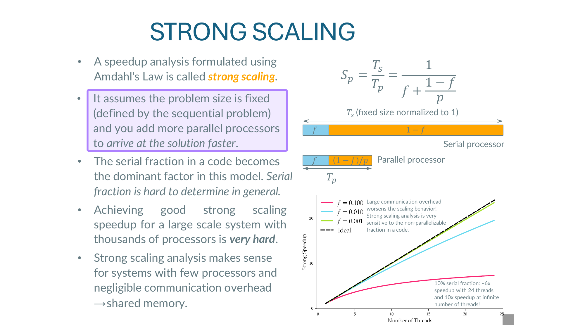
Strong scaling = 用 Amdahl's Law 表达的一种 speedup 分析。它的核心假设有两条：
记 T_s = 串行运行时间，T_p = 用 p 个处理器并行运行时间，f = 程序中无论如何无法并行的串行部分占比（serial fraction，0 ≤ f ≤ 1）。Speedup 写作：
直觉解读：把 T_s 拆成 f·T_s（怎么都得串行做完）+ (1-f)·T_s（可被 p 个 worker 平分）。后者并行后变成 (1-f)·T_s / p，无论 p 多大，前者那块串行时间不会缩。
令 p → ∞，(1-f)/p → 0，得：
Slide 右下角那张图就在画这件事——四条曲线对应不同 f：
f = 0（黑色虚线 ideal）：完全可并行，speedup = p，是 45° 直线。f = 0.001（绿）：上限 1000×，但要拿到一半需要约 1000 核。f = 0.01（橙）：上限 100×。f = 0.10（红）：上限只有 10×，哪怕给你一万核，也飞不过 10×。图上的注释 "50% serial fraction → no speedup with 24 threads, 2× speedup at infinite number of threads" 说明哪怕只有 50% 串行，再多核也只能 2×——惊人地悲观。
Slide 第三个 bullet 警告：serial fraction 是这模型的支配因子，但实际程序里它很难量出来。原因：
f 通常依赖问题规模、输入分布、硬件——没有静态的常数。f——这就是后两页 Example 的动机。Slide 最后一个 bullet："Strong scaling analysis makes sense for systems with few processors and negligible communication overhead → shared memory"。
代入公式：
而上限 1/f = 1/0.05 = 20×。100 核已经把可并行那 95% 压得很扁，剩下的 5% 串行就是天花板。
S_p = 1/(f + (1-f)/p)，上限 1/f。串行部分是天花板；适用场景：共享内存、核数不太大、通信开销可忽略。
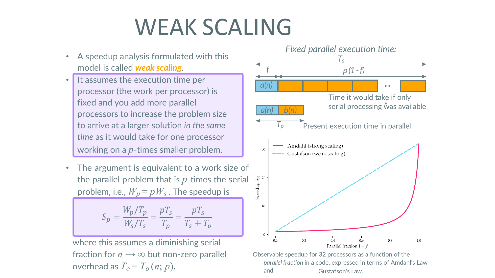
Weak scaling 换了一个根本不同的问题：
这正好是 HPC 用户实际的工作方式：拿到 1024 核不是为了把昨天的问题缩短到 1/1024，而是把昨天 1024 个 cell 的网格扩成 100 万个 cell。
设原本 1 核处理 work W_s 用时 T_s。weak scaling 下，p 核处理的总 work 是 W_p = p · W_s（每核仍然分到 W_s 那么多）。把可并行那部分写成 (1-f)，串行部分 f 不随 p 变。Speedup 定义：
其中 T_o = T_o(n; p) 是非零的串行/通信 overhead，依赖问题规模 n 和处理器数 p。当 n → ∞、T_o 增长慢于 p · T_s 时，S_p → p——也就是线性加速。
Slide 右边那张图同时画了两条 speedup 曲线，横轴是 serial fraction 1-f（注意是 1-f，不是 p）：
结论："observable speedup for 32 processors as a function of the parallel fraction in a code, expressed in term of Amdahl's Law and Gustafson's Law." ——同一份代码，用哪种 scaling 模型衡量，结果可能差一个数量级。这就是为什么 paper 报告 speedup 时必须说清是 strong 还是 weak。
f 是原本 T_s 中的串行分数；Gustafson 的 T_o 是新加进来的、随 p 变化的总 overhead（barrier, reduce, MPI 通信）。T_o(n;p)。T_o 不随 p 增加（理想情况）：S_p ≈ p·T_s/(T_s + const) → p，weak scaling 完美。T_o ∝ p（例如 all-to-all 通信）：S_p 反而趋向常数，weak scaling 也会饱和。S_p = p·T_s/(T_s+T_o)，理想下趋近 p（线性加速）。Strong 问"算得多快"，Weak 问"算得多大"——选错模型，speedup 数字会差一个数量级。
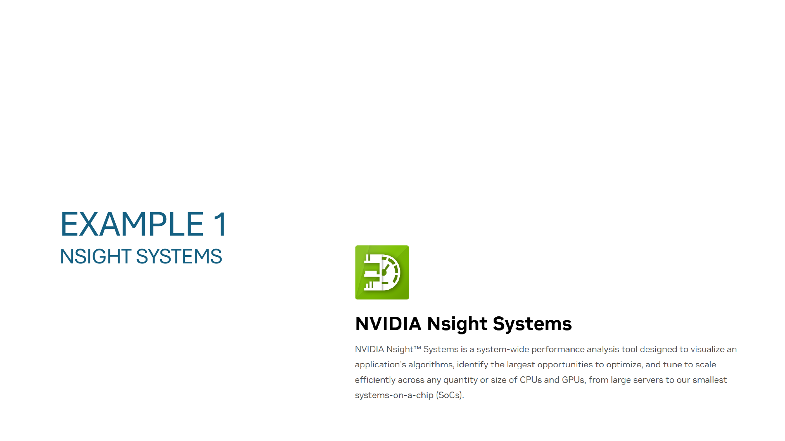
本讲第一个 Example 工具：NVIDIA Nsight Systems。Slide 直接贴了 NVIDIA 官网的产品定义——
NVIDIA Nsight™ Systems is a system-wide performance analysis tool designed to visualize an application's algorithms, identify the largest opportunities to optimize, and tune to scale efficiently across any quantity or size of CPUs and GPUs, from large servers to our smallest systems-on-a-chip (SoCs).
cudaMemcpy 占了 60%，或者 host 同步阻塞了 GPU。NVIDIA 把 GPU profiling 拆成两层：
| 工具 | 层次 | 看什么 | 典型问题 |
|---|---|---|---|
| Nsight Systems | 系统级 / 时间线 | CPU↔GPU 协作、kernel launch 顺序、内存拷贝、stream 重叠 | "GPU 利用率为什么只有 30%？" |
| Nsight Compute（下页） | kernel 级 / 单 kernel | warp occupancy、memory throughput、SM 利用、寄存器压力 | "这个 kernel 为什么 memory-bound？" |
典型 workflow：先 Nsight Systems 找到全局瓶颈（哪个 kernel / 哪段拷贝最贵），再 Nsight Compute 钻进那个 kernel 看微观指标。顺序反过来就是"优化了次要 kernel，整体没变化"的常见误区。
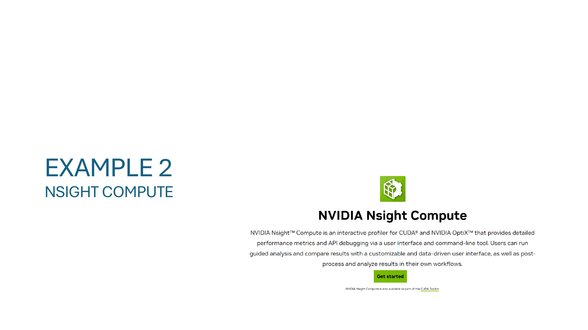
第二个 Example 工具：NVIDIA Nsight Compute。Slide 同样直接贴官网定义——
NVIDIA Nsight™ Compute is an interactive profiler for CUDA® and NVIDIA OptiX™ that provides detailed performance metrics and API debugging via a user interface and command-line tool. Users can run guided analysis and compare results with a customizable and data-driven user interface, as well as post-process and analyze results in their own workflows.
底部还提到 "NVIDIA Nsight Compute is also available as part of the CUDA Toolkit"——只要安装了 CUDA Toolkit，ncu 命令就在 PATH 里，不需要额外装。
ncu-ui（界面分析），CLI 是 ncu（远程 cluster 上常用——先 ncu --set full -o report ./my_app 收集，再把 .ncu-rep 文件 scp 回本地用 GUI 打开）。当 Nsight Systems 已经告诉你"kernel X 占了 70% 的 GPU 时间"之后——下一步就是用 Nsight Compute 钻进 kernel X，问：
本讲前半讲 Amdahl/Gustafson 给出了 speedup 的理论上限，但实际中一个 GPU kernel 离上限多远？答案靠 Nsight Compute 给出的 metric——比如 "DRAM throughput 已经 95%"说明你已经撞 memory roofline，再优化算法没用，得换数据布局；"occupancy 25%"说明你还有 4× 空间。profiling 给 scaling 模型里的那个 f 一个具体的、可量的来源。
# 收集 full metric set，输出到 report.ncu-rep
ncu --set full -o report ./my_cuda_app
# 只针对某个 kernel
ncu -k regex:my_kernel_name --set full -o report ./my_cuda_app
# 一段 source-line 级 profiling（需要编译时加 -lineinfo）
ncu --import report.ncu-rep --page details --section SourceCounters
# 之后把 report.ncu-rep 拉到本地用 ncu-ui 图形界面打开nvprof 是老的命令行 profiler（CUDA 10 之前主流）。它的两个角色被拆成了 Nsight Systems（系统时间线）+ Nsight Compute（kernel 微观）。nvprof 见到老脚本里的就替换掉。ncu。
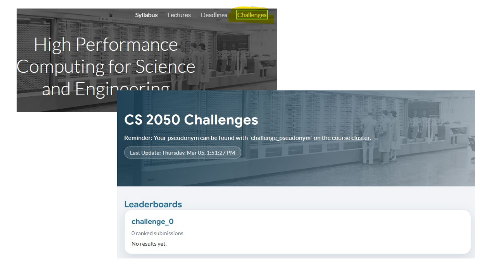
课程网站新增的 Challenges 标签页（导航栏从 Syllabus / Lectures / Deadlines 多了一个 Challenges）。这是一个非必修的、有排行榜的性能挑战板块：
challenge_pseudonym 拿到自己的 pseudonym。challenge_0（占位），"0 ranked submissions, No results yet." 还没人提交，意味着大家可以"抢沙发"。跟本讲的连贯性：Strong/Weak scaling 给评判标准，Nsight 系列给优化工具，Challenges 给"实战靶场"——把课上的理论用到一个公开比 speedup 的题目上。
S_p = 1/(f + (1-f)/p)，上限 1/f。适合shared-memory、少核、低通信。S_p = p·T_s/(T_s+T_o)，理想下 ≈ p。适合大集群、MPI、可放大问题。